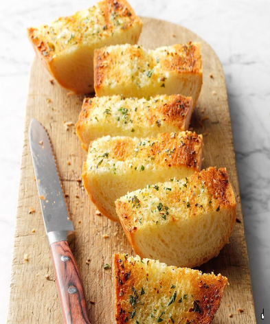

Garlic Bread

I like garlic, and I like bread. Let's combine the two!
Mostly used as an accessory to a bigger meal, but just as good on its own.
Combine bread, garlic, and butter. The result? Bread v2.0.
Ingredients:
- 1/2 cup of butter
- 3-4 cloves of garlic
- 1 loaf of french/white bread (halves lengthwise)
- 2 tablespoons minced fresh parsley
- 4 slices of bread
Instructions:
- In a small bowl, combine butter and garlic. Crust over cut sides of bread, sprinkle with parsley.
- Place cut side up on a baking sheet.
- Bake at 350f for 8 minutes.
- Serve warm!